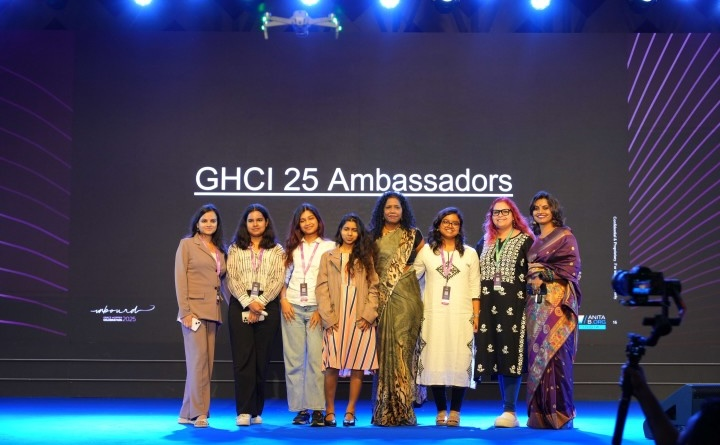
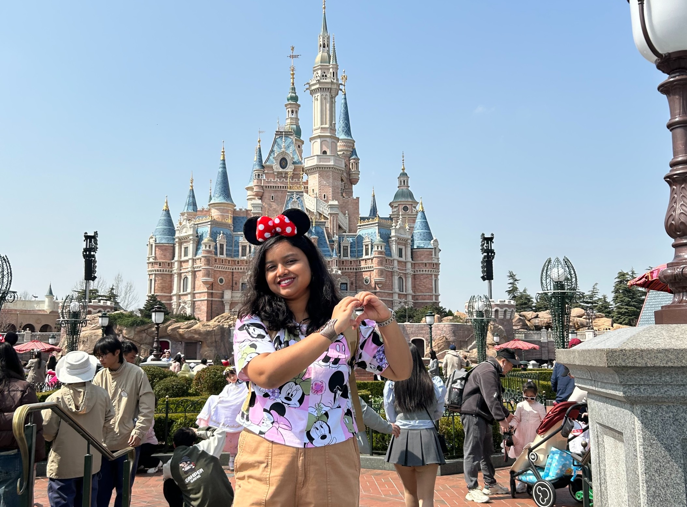
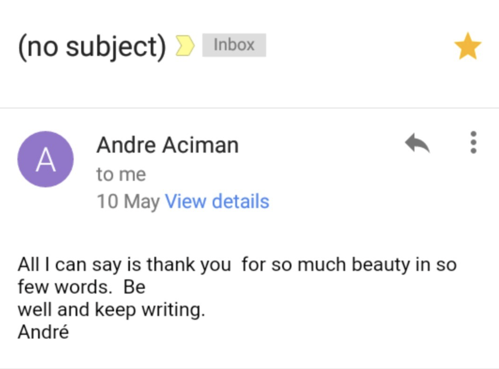

Bright Spots
I’ve been lucky to cross paths with people, communities, and opportunities that changed me for the better. These are a few bright spots I carry with me from different seasons of my journey.
Top Ambassador, GHCI '25

- Recognized as Top Ambassador for GHCI 2025 with 65 verified missions completed.
- Led community engagement and outreach across the ambassador program.
Cine Books Interview
![A photo collage on a white background. On the left is a portrait of a smiling woman wearing a mustard-yellow top decorated with traditional Kathakali face patterns. The right side features three smaller, dimly lit, dramatic images: the top shows a man holding the hand of a woman in a black dress wearing a sheer black veil; the middle highlights two hands reaching out and gently touching; the bottom shows the man and the veiled woman looking at each other intensely against a bright background light.](assets/highlights/top-highlight-2.jpg)
- Interviewed by Cine-Books Entertainment.
- Elizabeth was adapted into a photo story by photographer Marta Syrko and portrayed by Andrii Petruk and Tamari Gorgisheli.
- Read the feature here [2019].
Hackathon Winner

- Winner for several hackathons: Backyard Hacks 2.0, Tech4U Hacks, RU Hacks 2021- Digital, Athena Hacks (2021).
- Finalist for PickHacks (2021).
Memory Montage
Some of my favorite little "life" moments.

Visiting Disneyland for the first time (hopefully not the last) at the tender age of 25.

André Aciman replied to my fan email and poem. Yeah, crazy, I know. Receipt included.
"Let Me Shoot Across the Sky" at 2,430 meters in Bir: flying high when I’m low, low, low.
"All our dreams can come true if we have the courage to pursue them." - Walt Disney